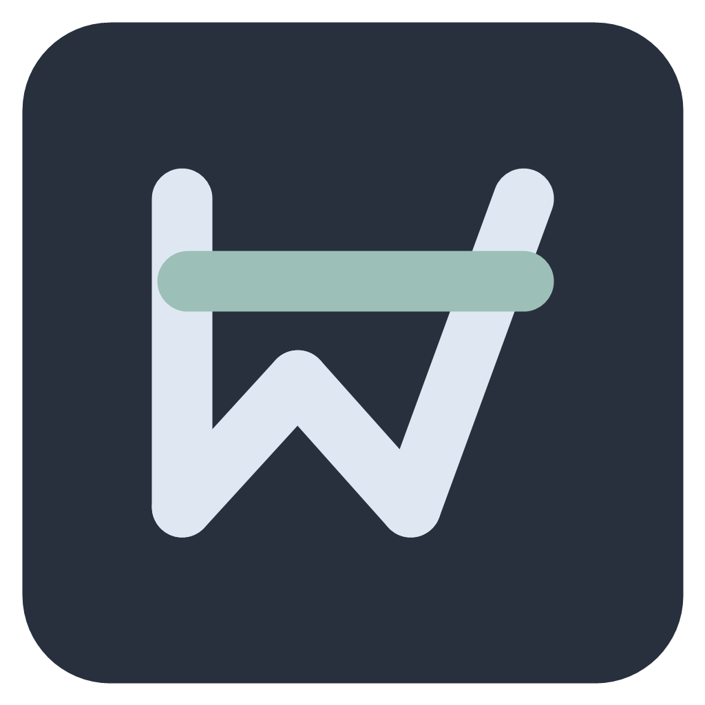

接上已有安排
连接日历或待办账号，或添加有效的日历订阅。熟悉的工具继续照常用。

DayweaveBETA01 / CURRENTLY
计划留在原来的地方。
当前这一件，留在眼前。
App 界面预览 · 示例数据
Google 日历和 Microsoft To Do，在同一个小窗里。拉开小条，查看下一项安排和具体待办；点击日历图标查看一周安排。
试着操作拖动小条 · 拖边缘调长度 · 点下沿展开待办与日历点击小条下沿，展开待办与日历
界面复用当前 App，日程与待办均为示例数据。只有设置了起止时间的日程才显示倒计时。真实账号导入与窗口置顶需在 Windows 应用中使用。
LESS SWITCHING. MORE DOING.
写作业、看课程、准备面试时，
不用反复切回完整的日历窗口。
连接日历或待办账号，或添加有效的日历订阅。熟悉的工具继续照常用。
待办显示任务名称，展开后可以勾选完成；有起止时间的日程显示剩余时间，结束后自然切换。
拉开小条查看详情，再点日历图标看一周安排。待办也可以在这里安排时间。
MADE TO STAY OUT OF YOUR WAY
位置、长度、外观，调成适合自己的样子。
信息由你展开，注意力留给手头的事。
长度由你决定拖动边缘调整，不必占满屏幕。
日程按时间走时间过去就切换，不因没点完成而一直计超时。
保留原来的安排读取外部来源；在 Dayweave 的本地操作不会改写原日历和待办。
YOUR PLANS, ALREADY HERE
选择合适的连接方式，带上已有的安排。
登录账号，选择要显示的日历。
账号授权读取清单和截止日期；按需安排时间。
账号授权使用“订阅到其他日历”提供的链接。
日历订阅需要学校或服务提供有效的 iCal / ICS 订阅。
日历订阅可读取的内容受来源提供的信息和账号权限限制。仅有截止日期的待办不会被自动当作正在进行的日程。
DAYWEAVE IN ACTION
拉开、安排、收起。
需要时多看一点，其余时间留给手头的事。
26 秒 · 无声字幕演示 · 画面录自与桌面版共用的界面，使用示例数据。可全屏查看。
ONE SMALL STRIP. YOUR CURRENT PLAN.
Dayweave 0.1.1 · 正在打磨的小工具